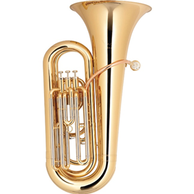
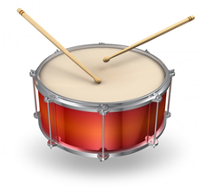
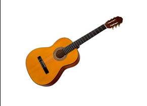
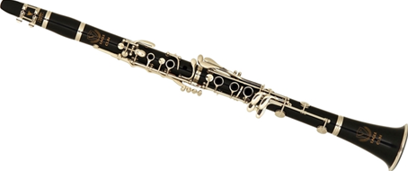
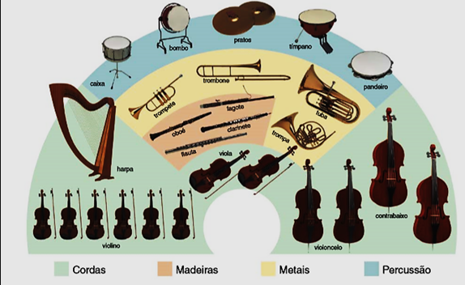

Os instrumentos musicais são agrupados em famílias com base em na origem de seus sons. E em uma orquestra, músicos se organizam de acordo com essas famílias.
Aliás, a variedade de um instrumento e seus sons é uma das coisas mais encantadoras nos instrumentos musicais e deixam a música de uma orquestra encantadora.
Agora veja cada uma dessas famílias, pelas quais são organizados os instrumentos musicais:
Instrumentos de metal são feitos de bronze, latão ou algum outro metal que faça som quando o ar é soprado para dentro. Os lábios do músico devem fazer
um “zumbido”, como se fazendo um barulho “raspando” contra o bocal. O ar então vibra no interior do instrumento, que produz um som.
Instrumentos de sopro incluem trompete, trombone, tuba, trompa e corneta.

A maioria dos instrumentos de percussão fazem sons quando eles são atingidos, como um tambor ou um pandeiro. Outros são abalados, como maracas, e outros
ainda podem ser batidos ou esfregados, riscados, ou qualquer outra coisa que os faça vibrar, produzindo som durante o processo.
Instrumentos de percussão incluem tambores, címbalos, triângulo, carrilhões, pandeiros, tímpanos e xilofone.

Os sons de instrumentos de cordas vêm de suas cordas. As cordas podem ser beliscadas, como em uma guitarra ou harpa, friccionadas como com um violoncelo
ou um violino. Isto cria uma vibração que provoca um som único.
Instrumentos de cordas incluem o violino, violão, viola, violoncelo, contrabaixo, harpa.

Familia das madeiras ou instrumentos de sopro produzem um som quando o ar é soprado para dentro. Esse ar pode ser soprado através de uma borda, como acontece
com uma flauta, entre um cano e uma superfície, como acontece com um clarinete. O som acontece quando o ar vibra dentro, produzindo um dos mais belos sons de todos
Instrumentos de sopro incluem flauta, saxofones, flautim, clarinete, gravador, fagote e oboé.

